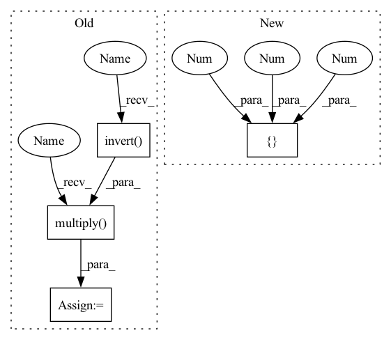

Pattern ID :27612

Before Change
)
cube_to_world = mercury.pybullet.get_pose(cube)
pybullet_planning.draw_pose(cube_to_world)
cube_to_ee = pybullet_planning.multiply(
pybullet_planning.invert(ee_to_world), cube_to_world
)
ri.gripper.contact_constraint = p.createConstraint(
parentBodyUniqueId=ri.robot,
parentLinkIndex=ri.ee,
childBodyUniqueId=cube,
After Change
cube = pp.create_box(0.03, 0.05, 0.1, mass=0.1, color=(0, 1, 0, 1))
ee_to_world = ri.get_pose("tipLink")
pp.draw_pose(ee_to_world)
obj_to_ee = ([0, 0, 0.05], [0, 0, 0, 1])
obj_to_world = pp.multiply(ee_to_world, obj_to_ee)
p.resetBasePositionAndOrientation(cube, *obj_to_world)
ri.gripper.contact_constraint = p.createConstraint(
In pattern: SUPERPATTERN
Frequency: 4
Non-data size: 4
Instances
Fragment ID: 81965947
Project Name: wkentaro/reorientbot
Commit Name: d294f0a1b2469bd179de6d78efe38ad72e0193c5
Time: 2021-09-22
Author: www.kentaro.wada@gmail.com
File Name: examples/checks/check_attached_object_ik.py
M Class Name: AnonimousClass
N Class Name: AnonimousClass
M Method Name: main(0)
N Method Name: main(0)
M Parent Class:
N Parent Class:
M File Name: examples/checks/check_attached_object_ik.py
N File Name: examples/checks/check_attached_object_ik.py
M Start Line: 24
M End Line: 91
N Start Line: 24
N End Line: 82
'>
Before Change
)
cube_to_world = mercury.pybullet.get_pose(cube)
pybullet_planning.draw_pose(cube_to_world)
cube_to_ee = pybullet_planning.multiply(
pybullet_planning.invert(ee_to_world), cube_to_world
)
ri.gripper.contact_constraint = p.createConstraint(
parentBodyUniqueId=ri.robot,
parentLinkIndex=ri.ee,
childBodyUniqueId=cube,
After Change
cube = pp.create_box(0.03, 0.05, 0.1, mass=0.1, color=(0, 1, 0, 1))
ee_to_world = ri.get_pose("tipLink")
pp.draw_pose(ee_to_world)
obj_to_ee = ([0, 0, 0.05], [0, 0, 0, 1])
obj_to_world = pp.multiply(ee_to_world, obj_to_ee)
p.resetBasePositionAndOrientation(cube, *obj_to_world)
ri.gripper.contact_constraint = p.createConstraint(
'>
Fragment ID: 81965950
Project Name: wkentaro/reorientbot
Commit Name: d294f0a1b2469bd179de6d78efe38ad72e0193c5
Time: 2021-09-22
Author: www.kentaro.wada@gmail.com
File Name: examples/checks/check_attached_object_ik.py
M Class Name: AnonimousClass
N Class Name: AnonimousClass
M Method Name: main(0)
N Method Name: main(0)
M Parent Class:
N Parent Class:
M File Name: examples/checks/check_attached_object_ik.py
N File Name: examples/checks/check_attached_object_ik.py
M Start Line: 24
M End Line: 91
N Start Line: 24
N End Line: 82
'>
Before Change
print("Warning: cannot find place pose")
break
ee_to_world = pybullet_planning.multiply(
obj_to_world, pybullet_planning.invert(obj_to_ee)
)
obstacles = [plane, bin] + placed_objects
attachments = [
pybullet_planning.Attachment(ri.robot, ri.ee, obj_to_ee, obj)
After Change
c_bin_to_world = mercury.geometry.Coordinate(
*pybullet_planning.get_pose(bin)
)
c_bin_to_world.translate([0, 0, 0.3], wrt="world")
j = robot_model.inverse_kinematics(
c_bin_to_world.skrobot_coords,
'>
Fragment ID: 81965951
Project Name: wkentaro/safepicking
Commit Name: 45bdac15314395448beb253d595b936ef723dabf
Time: 2021-03-25
Author: www.kentaro.wada@gmail.com
File Name: examples/goal/bin_packing_no_grasp.py
M Class Name: AnonimousClass
N Class Name: AnonimousClass
M Method Name: main(0)
N Method Name: main(0)
M Parent Class:
N Parent Class:
M File Name: examples/goal/bin_packing_no_grasp.py
N File Name: examples/goal/bin_packing_no_grasp.py
M Start Line: 125
M End Line: 271
N Start Line: 124
N End Line: 250